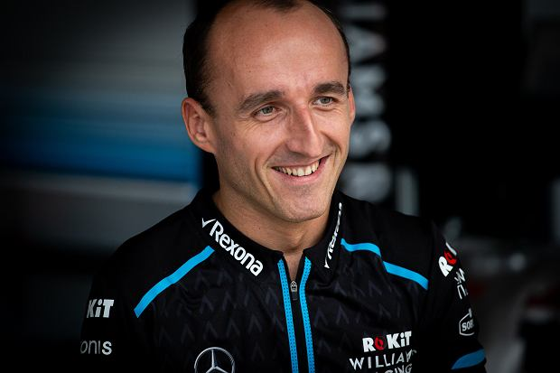

Robert Kubica
Robert Kubica to były kierowca F1 w latach 2006-2011 oraz 2019.
Polski kierowca wyścigowy Mistrz Formuły Renault 3.5 z 2005. W latach 2006–2009 był kierowcą zespołu BMW Sauber, rozpoczynając swoją karierę w Formule 1 od roli kierowcy testowego. W czerwcu 2008, podczas Grand Prix Kanady, odniósł swoje pierwsze zwycięstwo w Formule 1, stając się pierwszym Polakiem w historii, który tego dokonał.
- Urodzony 7 grudnia 1984 w Krakowie
- Polak
- Seria ELMS
- Zespół WRT

Robert Kubica - żywa legenda